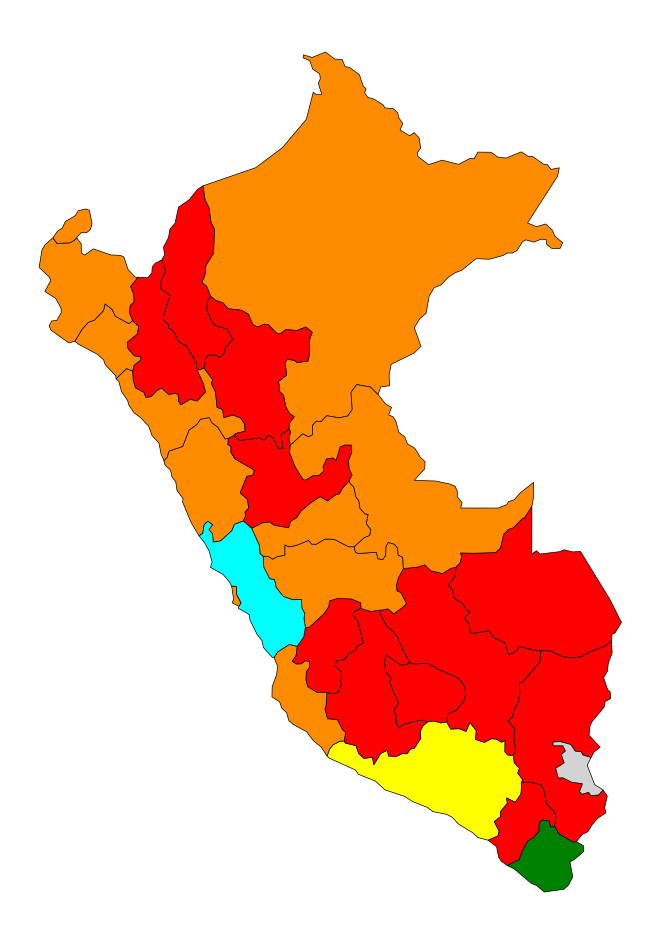

Departamentos:
{{lista-departamentos}}
Resultados totales
| AGRUPACIÓN POLÍTICA | CANDIDATO / AGRUPACIÓN | TOTAL VOTOS | % VALIDOS |
|---|
Este sitio Web tiene datos de un mapa coroplético con datos de la ONPE de las elecciones generales 2026. El motivo de este sitio web es poder visualizar los datos coropléticos sin APIs ni librerías Javascript complejas y con una visualización directa.
Los resultados se pueden consultar aquí: ONPE - PRESENTACIÓN DE RESULTADOS

Departamentos:
{{lista-departamentos}}
| AGRUPACIÓN POLÍTICA | CANDIDATO / AGRUPACIÓN | TOTAL VOTOS | % VALIDOS |
|---|